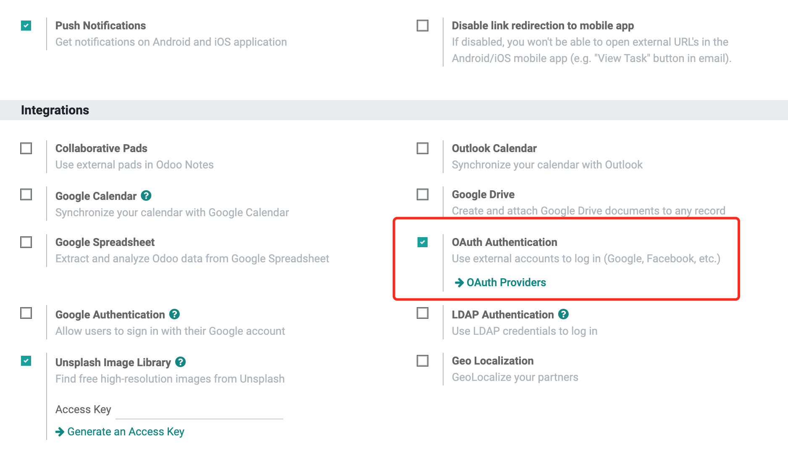
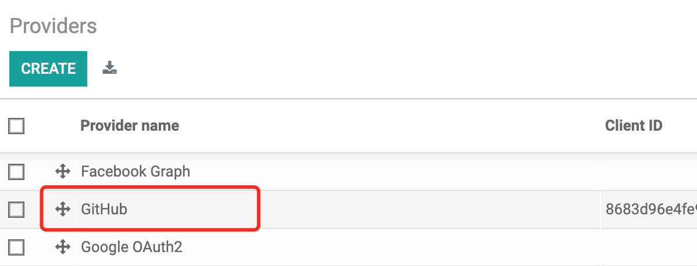
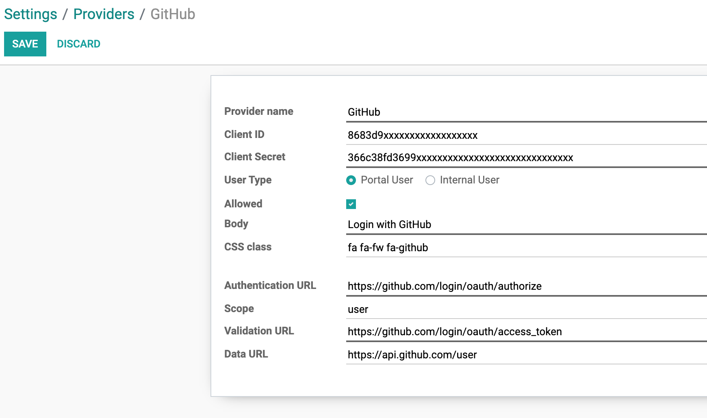
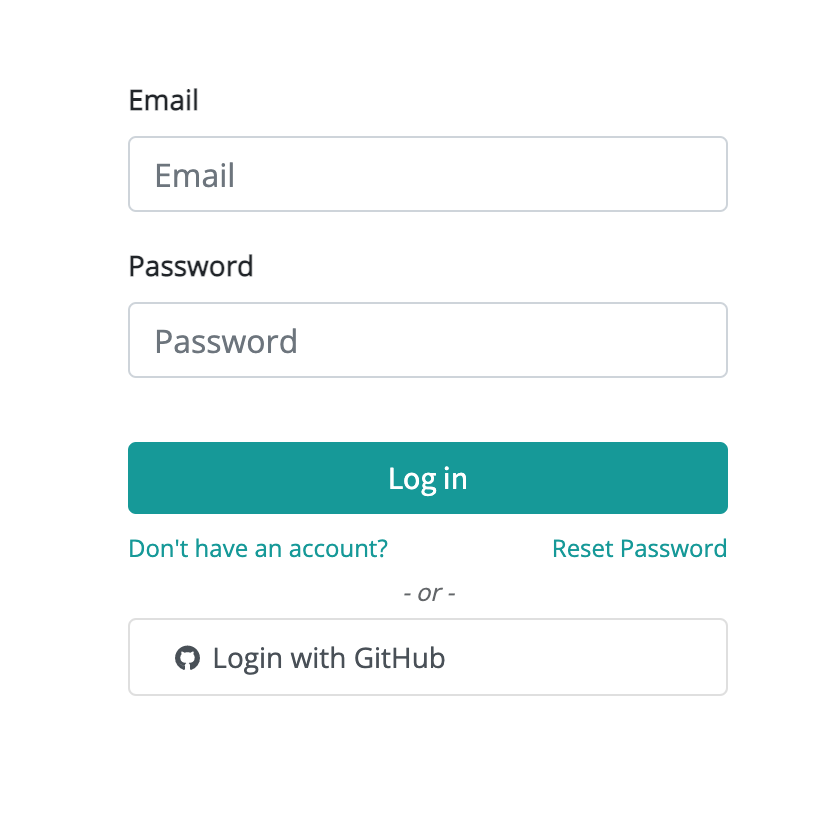
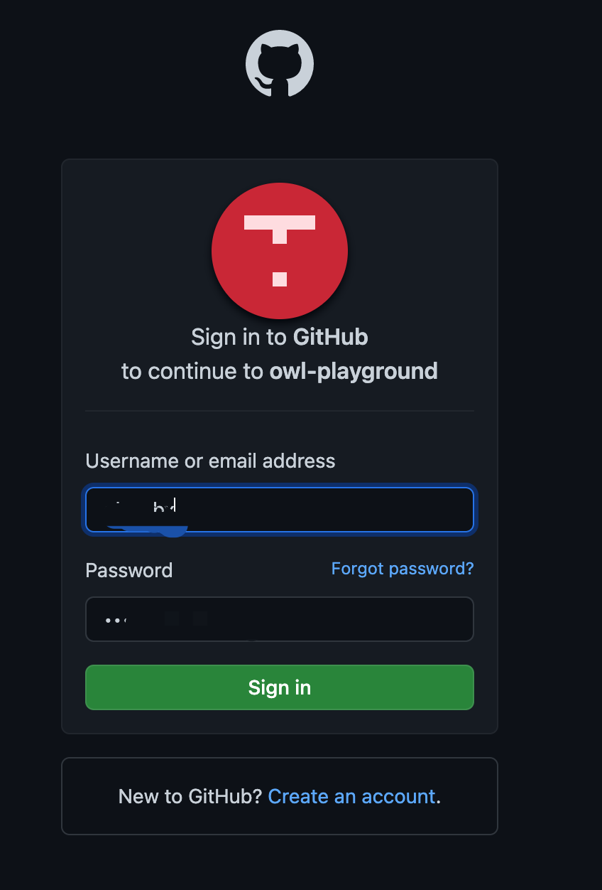
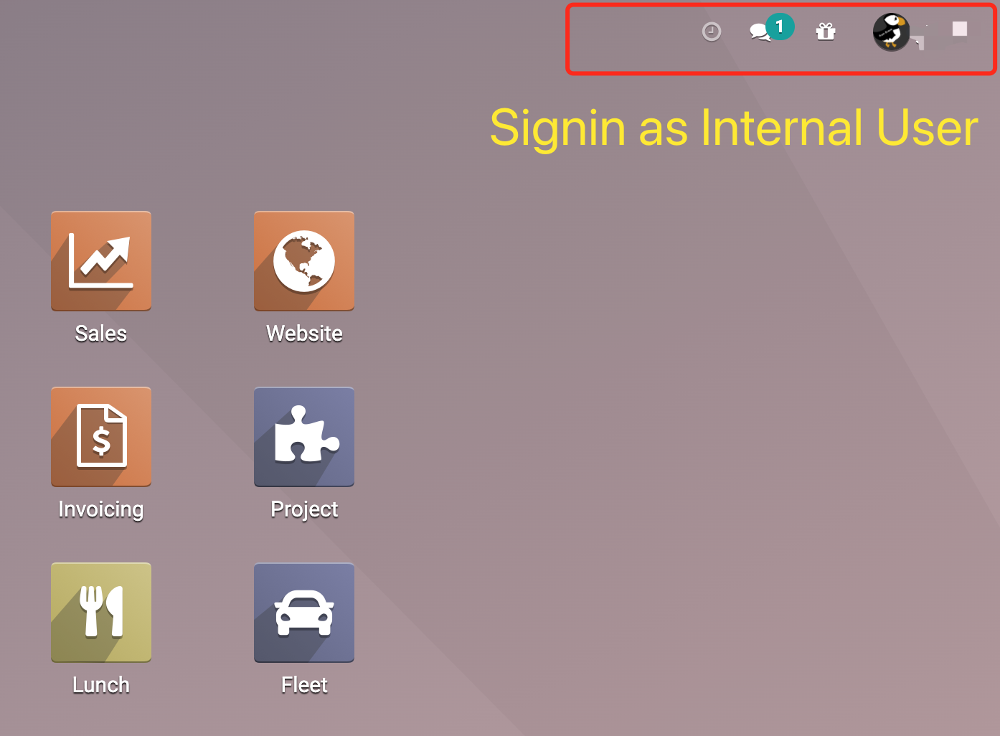
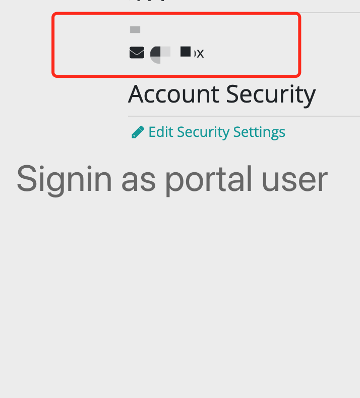

Integrate Github Authenticator with Odoo
Settings
1. Go to Settings -> General Settings -> Integrations. Enabled "OAuth Authentication".

2. Click OAuth Providers, Select Github item.

3. Input Client ID and Client Secret.

Sign in
4. Save and Goto login page.

5. Signin with Github account.

6. Signin as internal user.

7. Signin as portal user.
